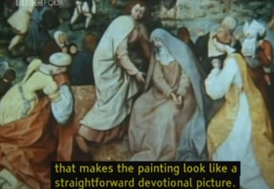

Berger brought up many points in his series Ways of Seeing. Some of these points include that there has been many changes in how we view paintings due to the creation of cameras, the subject of the woman in paintings, the purpose of oil paintings, and how it connects to modern day glamour and publicity. In this response, I will talk about the parts that I agree and respectfully disagree with in the first point.

Berger claims that the camera changed the way in which we viewed paintings. It allowed paintings to be seen anywhere and everywhere and as a result, it loses its uniqueness. He then says that original paintings are still amazing because the experience cannot be taught. I understand where this sentiment comes from, but the mass replication of paintings through digital devices can also increase the want to see the original. For example, some paintings such as the Sistine Chapel or the Mona Lisa are everywhere and very well recognized. As a result, people want to go see it, and in the case of the Mona Lisa, they get disappointed because the countless reproductions make the paintings seem larger than life.
Berger adds on to his claim by saying that modern technology can manipulate the meaning of a painting. He gives an example of a painting of The Road to Calvary by Bruegel and explains how looking at the whole painting will give off one impression while looking at the paintings in a specific order will give it a different type of vibe.


|

|

Berger then goes on to repeat this analysis with Regents of the Old Men's Almshouse by Frans Hals, but here he uses another person’s analysis of the painting. He then dissects the way the other person explains the painting. But, in doing this, Berger is doing what he was criticizing the other person for. He was manipulating the way we heard the other person’s words in the same way that the other person was manipulating the way we saw the painting. I thought that was pretty funny.

Also, interestingly enough, the other person’s analysis is wrong because some years later, the painting was restored to its former state, and it was shown that the painting was not originally that dark.